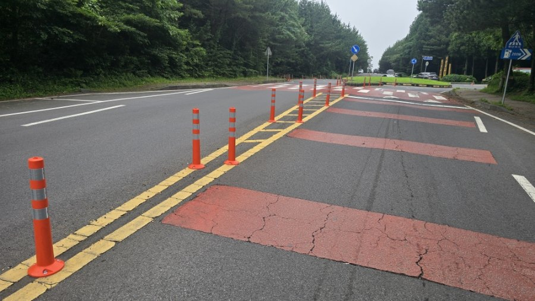
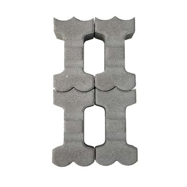
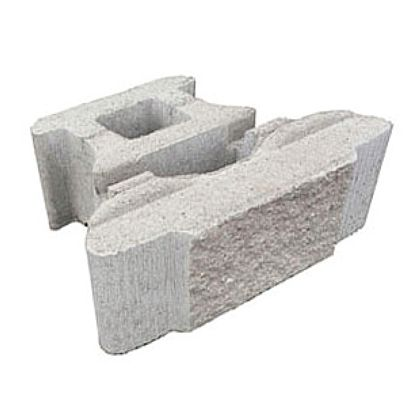
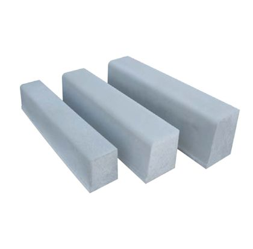
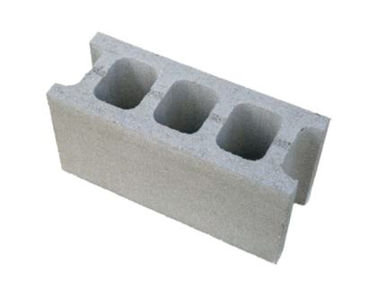
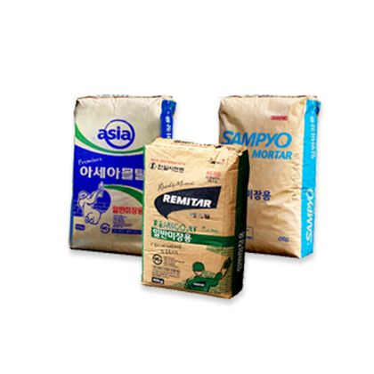

01
안전시설
제주 안전시설 설치·시공·유지보수
관공서·학교·공공시설·건설현장의 안전시설을 설치하고 교체·보수합니다. 1개소부터 시공합니다.
- 차선규제봉
- 시선유도봉
- 배수로 그레이팅
- 경계석
(주)아인산업안전은 제주도 내 안전시설 시공, 토목자재 공급, 산업안전용품 납품을 전문으로 합니다.

제주안전시설은 (주)아인산업안전이 운영하는 제주 안전시설 시공·토목자재·안전용품 브랜드입니다.
제주 안전시설 설치·시공·유지보수
관공서·학교·공공시설·건설현장의 안전시설을 설치하고 교체·보수합니다. 1개소부터 시공합니다.
제주 토목자재 판매·현장 납품
제주도 내 건설사와 토목·건축 현장에 건설·토목자재를 공급합니다. 규격과 수량을 확인해 제품 선정부터 견적·납품까지 지원합니다.
제주 건설현장 안전용품 납품·대량 견적
건설사·현장소장·안전관리자·구매 담당자의 납품·대량 견적 문의를 받습니다. 온라인 구매는 공식 쇼핑몰에서 가능합니다.
제주도에서 직접 시공한 현장의 기록입니다.
사진은 실제 시공 후 촬영한 것입니다.
필요한 품목을 찾아 견적을 요청하세요. 규격·수량·납품지(제주도 내)를 알려주시면 확인해 답변드립니다.
토목자재

잔디블록 주차장·공원 바닥 녹지화 2개 상품
옹벽블록 · 보강토 자재 보강토 옹벽 축조 2개 상품
경계블록 (경계석) 도로·보도 경계 구분 1개 상품
콘크리트 블록 · 벽돌 · 주춧돌 담장·창고·조적 공사 6개 상품
시멘트 · 몰탈 미장·조적·타일 떠붙임 4개 상품안전용품 — 제주 건설현장 납품·대량 견적
분류는 공식 쇼핑몰(ainsafety.com) 상위 카테고리 기준이며, 세부 품목과 온라인 제품 보기는 제주 안전용품 안내에서 확인하실 수 있습니다. 제주 현장 납품 가능 여부·재고·납기는 견적 시 확인해 안내합니다.
제주에서 실제로 수행한 작업을 기준으로 나눴습니다.
차선규제봉, 시선유도봉, 출차주의등, 반사시설, 경계석. 차량과 보행자가 만나는 지점을 정리합니다.
스텐 자바라 대문, 맞춤 프레임, 소규모 금속 시설물. 해풍 환경을 전제로 재질을 고릅니다.
통학로 시선유도봉, 출입구 경사로 진입판, 교내 안전시설. 방학 기간 시공에 맞춰 진행합니다.
배수로 그레이팅, 트렌치 커버, 보행 안내·반사시설. 발이 빠지고 덜컹거리는 구간을 정리합니다.
노후·부식·파손 시설의 보수와 부분 교체. 전면 교체 예산이 없을 때 판단을 함께 정리합니다.
토목자재와 안전용품은 품목·수량 확인 → 규격 확정 → 견적 → 제주 현장 납품 순으로 진행합니다.
지금 필요한 것을 고르시면 해당 안내로 바로 이동합니다.
(주)아인산업안전이 운영하는 제주 지역 브랜드입니다. 제주특별자치도에서 안전시설 설치·교체·보수, 토목자재 판매·현장 납품, 안전용품 납품 견적을 맡고 있습니다.
제주특별자치도 전 지역(제주시·서귀포시·읍면)입니다. 시공과 납품은 제주도 내 현장에 한하며, 제주도 밖 현장의 시공·납품은 하지 않습니다.
제주 현장 납품 견적문의에 품목·규격·수량과 납품지(제주도 내)를 남기시거나 전화(1660-4019)로 문의해 주세요. 재고·납기·가격은 품목에 따라 달라 견적 시 개별 안내합니다. 자세한 내용은 제주 안전용품 안내를 참고하세요.
가능합니다. 견적문의에 필요한 시공 내용과 자재·용품 품목을 함께 적어 주시면 한 번에 확인해 답변드립니다. 조건은 견적 시 개별 안내합니다.
같은 회사((주)아인산업안전)가 운영합니다. 제주안전시설은 제주도 내 건설사·현장 담당자를 위한 시공·토목자재·안전용품 납품 견적 사이트이고, 공식 쇼핑몰(ainsafety.com)은 안전용품을 온라인에서 검색·주문하는 구매 채널입니다.
가능합니다. 건설사·현장소장·안전관리자·구매 담당자뿐 아니라 관공서, 학교·공공시설, 제주도 내 사업장과 개인 공사도 문의를 받습니다. 세금계산서 발행이 가능합니다.
시공은 현장 사진과 위치를, 토목자재와 안전용품은 품목·규격·수량·납품지를 보내주시면 견적을 드립니다.
1660-4019제주특별자치도 전 지역 (제주시 · 서귀포시 · 읍면) · 1개소·소량부터